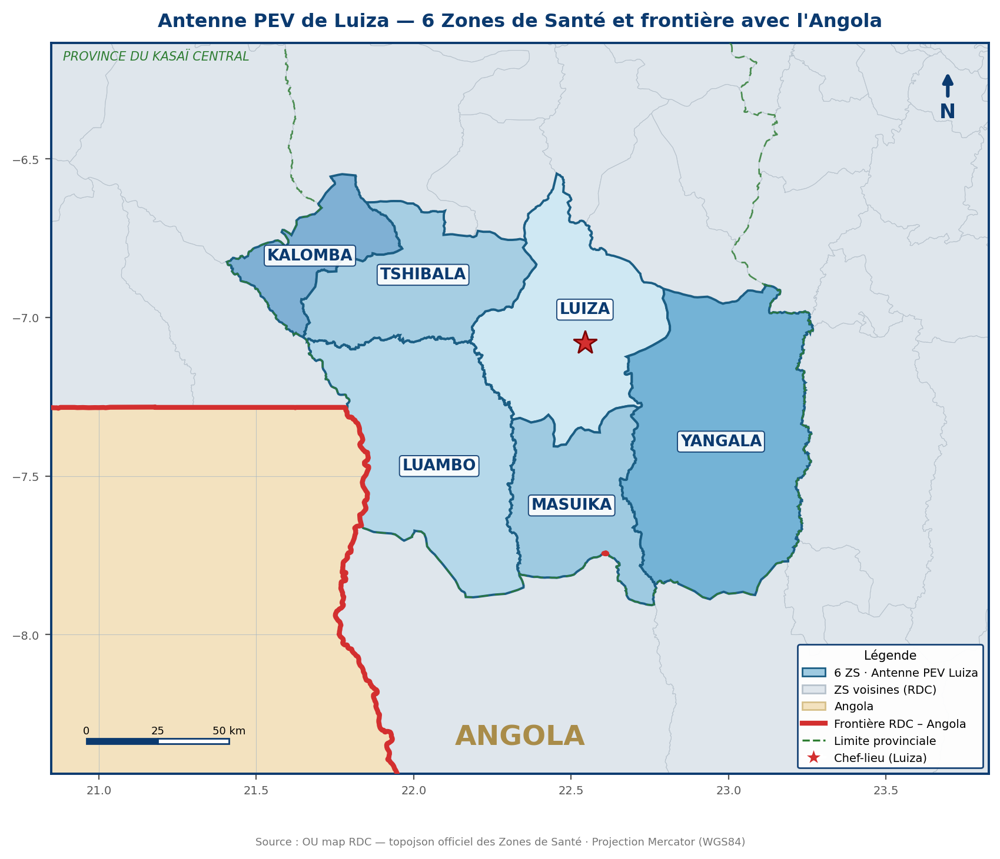

RÉPUBLIQUE DÉMOCRATIQUE DU CONGO — MINISTÈRE DE LA SANTÉ PUBLIQUE, HYGIÈNE ET PRÉVOYANCE SOCIALE
PEV
Programme Élargi de Vaccination — Antenne PEV de Luiza — Province du Kasaï Central
SITREP N°02 — CAMPAGNE JNV POLIO MAI 2026 | J-2 — 20 Mai 2026
I. INFORMATIONS GÉNÉRALES
PÉRIODE : 22 au 24 mai 2026
LANCEMENT : jeudi 22 mai 2026
(anticipé le 21 mai 2026 — ZS Luambo, frontalière Angola)
POPULATION : 1 741 599
CIBLES :
- 0 – 59 mois : 329 162
- 6 – 59 mois : 294 330
- 12 – 59 mois : 259 498
- 6 – 11 mois : 34 460
ANTIGÈNES : nVPO2 + VPOb (co-administration)
Territoires : 2 | Commune rurale : 1
ANTENNE : Luiza (6 ZS)
Campagne synchronisée avec l'Angola
CARTE DE L'ANTENNE PEV LUIZA — 6 ZS ET FRONTIÈRE AVEC L'ANGOLA

II. NIVEAU DES PRÉPARATIFS (OSP au 20 mai 2026)
73%
OSP ANTENNE GLOBAL
Moyenne ZS : 73 %
ZS ≥ 85 % 0 ZS
ZS 70–84 % 4 ZS
ZS 50–69 % 2 ZS
ZS à 0 % 0 ZS
6/6 ZS ont renseigné le Dashboard
III. POINTS SAILLANTS
| Sécurité | Situation sécuritaire calme dans les 6/6 ZS. |
| Coordination | 5 réunions de coordination tenues au niveau de l'antenne PEV ; 2 réunions en moyenne dans 5 ZS et 1 réunion dans la ZS Luiza. 6/6 ZS ont renseigné le Dashboard. Lancement anticipé prévu le 21/05/2026 dans la ZS Luambo (frontalière Angola). Coordination transfrontalière maintenue avec l'Angola. |
| Technique | Recrutement et briefing des acteurs réalisés dans les 6/6 ZS ; élaboration des croquis des aires de vaccination en cours ; réception des bases de données dans les 6/6 ZS. |
| Logistique | Arrivée des vaccins et autres intrants de la campagne au niveau de la province le 20/05/2026 ; actualisation des inventaires MDCF et recyclage des accumulateurs de froid dans les 6 ZS. |
| Communication | Plan de communication actualisé disponible dans les ZS ; séances de plaidoyer réalisées ; émissions radio dans 2 radios ciblées (ZS Luiza et ZS Masuika). |
| Finances | Fonds de mise en œuvre de la campagne non disponibles. |
PARTENAIRES DE LA CAMPAGNE
GaviCDCGates FoundationRotaryOMSUNICEFAFENETVillageReachPATH
Page 1/3
RÉPUBLIQUE DÉMOCRATIQUE DU CONGO — MINISTÈRE DE LA SANTÉ PUBLIQUE, HYGIÈNE ET PRÉVOYANCE SOCIALE
PEV
Programme Élargi de Vaccination — Antenne PEV de Luiza — Province du Kasaï Central
SITREP N°02 — CAMPAGNE JNV POLIO MAI 2026 | J-2 — 20 Mai 2026
IV. ÉTAT D'AVANCEMENT PAR COMMISSION
| Commission | Réalisations clés | Prochaines étapes |
|---|
| Coordination & Planification |
5 réunions de coordination tenues au niveau de l'antenne. 2 réunions en moyenne dans 5 ZS (1 réunion dans la ZS Luiza). 6/6 ZS ont renseigné le Dashboard. Coordination transfrontalière maintenue avec l'Angola. |
Tenir la réunion CLC dans la ZS Luiza ; poursuivre la coordination transfrontalière ; finaliser le lancement (Luambo 21/05, antenne 22/05). |
| Technique |
Recrutement et briefing des acteurs dans les 6/6 ZS ; croquis des aires de vaccination en cours ; réception des bases de données dans les 6/6 ZS. |
Finaliser les croquis ; partager les listes de prestataires à l'antenne PEV ; maintenir le coaching des équipes. |
| Logistique |
Vaccins et intrants arrivés au niveau de la province le 20/05/2026 ; inventaires MDCF et recyclage des accumulateurs de froid actualisés dans les 6 ZS. |
Déployer les vaccins et intrants vers les 6 ZS et les sites de vaccination ; sécuriser la chaîne de froid. |
| Communication |
Plan de communication actualisé ; plaidoyer réalisé ; émissions radio dans les ZS Luiza et Masuika. |
Remonter les chronogrammes ; réaliser le pré-marquage et l'identification des enfants en conflit vaccinal. |
| Finances |
Fonds de mise en œuvre non disponibles. |
Accélérer la mobilisation et le décaissement des fonds auprès des partenaires. |
V. FINANCEMENT (situation au 20 mai 2026)
| Situation | État | Action prioritaire |
|---|
| Fonds de mise en œuvre | Non disponibles à la date du SITREP. | Accélérer la mobilisation et le décaissement avant le lancement (21–22 mai 2026). |
VI. DIFFICULTÉS ET ACTIONS PRISES
Difficultés rencontrées
- Vaccins et intrants arrivés au niveau provincial mais non encore déployés dans les 6 ZS
- ZS Luiza sans réunion CLC à la date du SITREP
- Croquis des aires de vaccination non finalisés
- Listes de prestataires non encore partagées à l'antenne PEV
- Fonds de mise en œuvre non disponibles
Actions prises
- Organiser le déploiement immédiat des vaccins et intrants vers les ZS et les sites
- Programmer et tenir la réunion CLC dans la ZS Luiza
- Accélérer la finalisation des croquis des aires de vaccination
- Relancer le partage des listes de prestataires à l'antenne PEV
- Accélérer la mobilisation des fonds
VII. PERSPECTIVES — PRIORITÉS AVANT LE LANCEMENT (22 MAI 2026)
FINANCEMENT
Accélérer la mise à disposition des fonds de mise en œuvre.
LOGISTIQUE
Déployer les vaccins et intrants vers les 6 ZS et les sites de vaccination.
TECHNIQUE
Finaliser les croquis, partager les listes de prestataires et poursuivre le briefing.
LANCEMENT
Lancement anticipé ZS Luambo le 21/05 ; lancement officiel de l'antenne le jeudi 22/05/2026 ; pré-marquage et identification des enfants.
PARTENAIRES DE LA CAMPAGNE
GaviCDCGates FoundationRotaryOMSUNICEFAFENETVillageReachPATH
Page 2/3
RÉPUBLIQUE DÉMOCRATIQUE DU CONGO — MINISTÈRE DE LA SANTÉ PUBLIQUE, HYGIÈNE ET PRÉVOYANCE SOCIALE
PEV
Programme Élargi de Vaccination — Antenne PEV de Luiza — Province du Kasaï Central
SITREP N°02 — CAMPAGNE JNV POLIO MAI 2026 | J-2 — 20 Mai 2026
VIII. SYNTHÈSE OSP PAR ZONE DE SANTÉ (au 20 mai 2026)
| Zone de Santé | Technique | Logistique | Communication | OSP global |
|---|
| Masuika | 93% | 59% | 100% | 84% |
| Luambo | 84% | 59% | 83% | 76% |
| Yangala | 73% | 55% | 100% | 76% |
| Luiza | 86% | 57% | 83% | 75% |
| Tshibala | 100% | 0% | 100% | 67% |
| Kalomba | 90% | 25% | 59% | 58% |
| ANTENNE LUIZA | 88% | 43% | 88% | 73% |
Source : Outil de suivi des préparatifs des AS — JNV Mai 2026 (Kasaï Central, antenne Luiza). La logistique reste le domaine le plus faible (vaccins et intrants en cours de déploiement depuis le niveau provincial).
IX. CARTOGRAPHIE DE L'ANTENNE
Carte établie à partir du fond topojson officiel des Zones de Santé de la RDC — limites réelles des 6 ZS, ZS voisines, limite provinciale et frontière internationale RDC–Angola.
X. ÉQUIPE DE RÉDACTION
| Nom | Fonction | Tél. | E-mail |
|---|
| Dr Judith KANGOJI MISENGA | MCA a.i. | +243 999 091 207 | judithmisenga@yahoo.fr |
| Bernard UPUTU MUKALENGI | Logisticien Antenne PEV | +243 977 328 547 | mukalengiuputu@gmail.com |
| Clément KAKUTA | DATA Manager Antenne PEV | +243 970 522 546 | clementkakuta@gmail.com |
| Dr Felly LOFOLI | Consultant Épidémiologiste OMS | +243 813 662 142 | lofolif@who.int |
| Raymond RAMAZANI | Consultant VM UNICEF | +243 813 233 209 | motokaleraymond@gmail.com |
PARTENAIRES DE LA CAMPAGNE
GaviCDCGates FoundationRotaryOMSUNICEFAFENETVillageReachPATH
Page 3/3